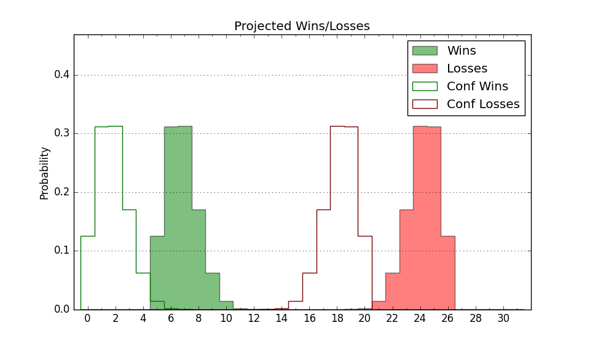

| Home | Game Probabilities | Conferences | Preseason Predictions | Odds Charts | NCAA Tournament |
| City: | Washington, D.C. | |
| Conference: | Big East (11th)
| |
| Record: | 0-9 (Conf) 5-15 (Overall) | |
| Ratings: | Comp.: -4.1 (216th) Net: -4.6 (221st) Off: 102.5 (164th) Def: 107.1 (275th) SoR: 0.0 (185th) |
| Remaining | ||||||
|---|---|---|---|---|---|---|
| Date | Opponent | Win Prob | Pred. | |||
| 1/24 | DePaul (148) | 49.3% | L 75-76 | |||
| 1/29 | @ St. John's (84) | 12.1% | L 72-87 | |||
| 2/1 | Creighton (14) | 11.7% | L 68-82 | |||
| 2/4 | Connecticut (5) | 6.4% | L 65-84 | |||
| 2/8 | @ Providence (39) | 6.7% | L 66-85 | |||
| 2/11 | Marquette (20) | 14.8% | L 73-85 | |||
| 2/14 | @ Seton Hall (69) | 9.7% | L 61-77 | |||
| 2/19 | @ Butler (88) | 12.4% | L 64-78 | |||
| 2/22 | St. John's (84) | 31.9% | L 77-83 | |||
| 2/26 | Providence (39) | 19.7% | L 71-81 | |||
| 3/1 | @ Creighton (14) | 3.8% | L 63-87 | |||
| Previous | Game Score | |||||
| Date | Opponent | Win Prob | Result | Off | Def | Net |
| 11/8 | Coppin St. (302) | 79.9% | W 99-89 | 1.4 | 0.2 | 1.7 |
| 11/12 | Green Bay (360) | 94.8% | W 92-58 | 18.3 | -1.7 | 16.7 |
| 11/15 | Northwestern (45) | 20.5% | L 63-75 | -1.6 | 0.9 | -0.7 |
| 11/18 | (N) Loyola Marymount (87) | 20.4% | L 66-84 | -7.8 | -1.5 | -9.3 |
| 11/20 | (N) La Salle (282) | 63.5% | W 69-62 | -9.9 | 15.5 | 5.6 |
| 11/23 | American (206) | 61.6% | L 70-74 | -7.8 | -2.4 | -10.1 |
| 11/26 | UMBC (224) | 67.1% | W 79-70 | -3.1 | 9.3 | 6.2 |
| 11/30 | @Texas Tech (47) | 7.2% | L 65-79 | 0.1 | 8.0 | 8.1 |
| 12/3 | South Carolina (299) | 79.1% | L 71-74 | -5.4 | -12.0 | -17.4 |
| 12/7 | Siena (184) | 56.6% | W 75-68 | 8.3 | 2.7 | 11.0 |
| 12/10 | @Syracuse (99) | 14.1% | L 64-83 | -7.0 | -6.2 | -13.2 |
| 12/16 | Xavier (26) | 15.9% | L 89-102 | 14.4 | -17.6 | -3.1 |
| 12/20 | @Connecticut (5) | 2.0% | L 73-84 | 12.5 | 4.8 | 17.3 |
| 12/29 | @DePaul (148) | 22.2% | L 76-83 | 4.1 | -3.6 | 0.5 |
| 1/1 | Butler (88) | 32.5% | L 51-80 | -22.0 | -10.8 | -32.8 |
| 1/4 | Villanova (68) | 25.9% | L 57-73 | -17.2 | 2.1 | -15.1 |
| 1/7 | @Marquette (20) | 4.9% | L 73-95 | 4.8 | -0.6 | 4.2 |
| 1/10 | Seton Hall (69) | 26.8% | L 51-66 | -19.2 | 1.4 | -17.7 |
| 1/16 | @Villanova (68) | 9.3% | L 73-77 | 14.6 | 5.2 | 19.7 |
| 1/21 | @Xavier (26) | 5.2% | L 82-95 | 14.6 | -0.1 | 14.5 |
| Stats & Trends | |||||
|---|---|---|---|---|---|
| Current | Day | Week | Month | Season | |
| Composite | -4.1 | +0.1 | +1.1 | -3.8 | -10.2 |
| Comp Rank | 216 | +3 | +16 | -47 | -116 |
| Net Efficiency | -4.6 | +0.1 | +1.5 | -2.9 | -- |
| Net Rank | 221 | +2 | +17 | -34 | -- |
| Off Efficiency | 102.5 | +0.7 | +1.5 | -2.7 | -- |
| Off Rank | 164 | +5 | +20 | -54 | -- |
| Def Efficiency | 107.1 | -0.6 | -0.0 | -0.2 | -- |
| Def Rank | 275 | -- | +14 | +5 | -- |
| SoS Rank | 64 | -4 | +29 | +121 | -- |
| Exp. Wins | 6.8 | -0.1 | -0.1 | -2.6 | -7.3 |
| Exp. Conf Wins | 1.8 | -0.1 | -0.1 | -2.6 | -4.9 |
| Conf Champ Prob | 0.0 | -- | -- | -- | -0.5 |

| Advanced Stats | ||
|---|---|---|
| Stat | Value | Rank |
| Off Eff FG % | 0.497 | 196 |
| Off Ast Ratio | 0.130 | 265 |
| Off ORB% | 0.302 | 92 |
| Off TO Rate | 0.148 | 105 |
| Off FT Ratio | 0.320 | 154 |
| Def Eff FG % | 0.512 | 210 |
| Def Ast Ratio | 0.163 | 311 |
| Def ORB% | 0.269 | 187 |
| Def TO Rate | 0.135 | 322 |
| Def FT Ratio | 0.238 | 29 |